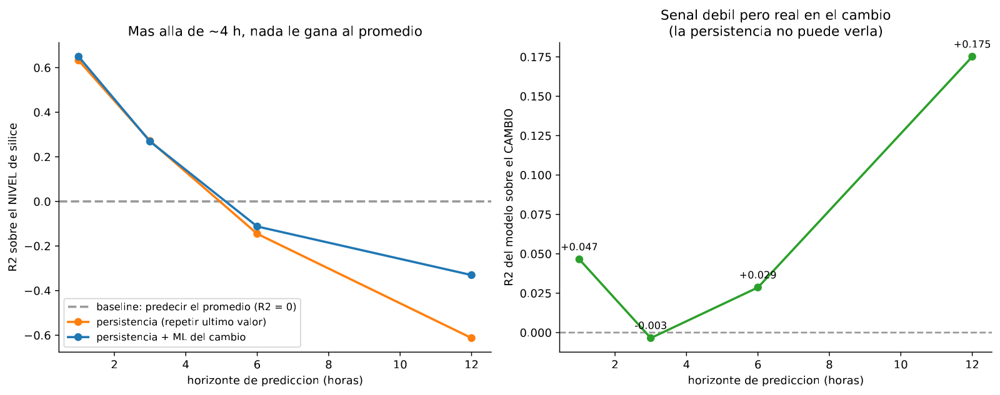

En 30 segundos
- 0 de 4. En ninguno de los cuatro horizontes probados el machine learning da un modelo desplegable.
- La persistencia se hunde sola. Vale 0,632 a una hora, 0,271 a tres, y se vuelve negativa a partir de las cinco.
- A 12 horas el modelo del nivel empeora las cosas, con R² −0,851 frente al −0,613 de la persistencia.
- Hay una señal propia y es real: predecir el cambio da R² +0,175 a 12 horas. Real, y todavía insuficiente.
- Tres intentos más de tumbar el veredicto, y los tres fallan. Reentrenar, partir por régimen y cambiar la pregunta por un aviso.
Qué resuelve este módulo
El módulo 7 dejó una salida abierta. A una hora la persistencia es imbatible porque el proceso apenas se ha movido. A horizontes más largos esa ventaja tiene que desaparecer.
Aquí se comprueba. La medición se repite a 1, 3, 6 y 12 horas. Y se prueba a cambiar la pregunta: en vez de predecir cuánta sílice habrá, predecir cuánto va a subir o bajar.
Y como el veredicto es fuerte, el módulo termina intentando romperlo por tres vías más.
Antes de la teoría: un ejemplo de juguete
Cinco horas de una planta que sube de dos en dos.
| Hora | 1 | 2 | 3 | 4 | 5 |
|---|---|---|---|---|---|
| % SiO₂ | 2 | 4 | 6 | 8 | 10 |
La media es 6, y la variación alrededor de esa media es:
error de predecir siempre la media = [(2−6)² + (4−6)² + (6−6)² + (8−6)² + (10−6)²] / 5
= (16 + 4 + 0 + 4 + 16) / 5
= 40 / 5
= 8Ese 8 es la referencia. El R² compara contra él.
Paso 1. Persistencia a una hora vista
Predecir cada hora con el valor de la hora anterior. Como la planta sube de dos en dos, cada fallo vale 2.
error = 2² = 4
R² = 1 − (4 / 8) = 0,50Paso 2. Persistencia a dos horas vista
Ahora hay que contestar con dos horas de antelación, así que el último dato disponible es el de hace dos horas. Cada fallo vale 4.
error = 4² = 16
R² = 1 − (16 / 8) = −1,00Ya es negativo. Con dos horas de antelación, repetir el último dato es peor que decir la media.
Paso 3. Persistencia a tres horas vista
error = 6² = 36
R² = 1 − (36 / 8) = −3,50Paso 4. Ver la caída junta
| Antelación | Fallo típico | Error | R² |
|---|---|---|---|
| 1 hora | 2 | 4 | 0,50 |
| 2 horas | 4 | 16 | −1,00 |
| 3 horas | 6 | 36 | −3,50 |
La ventaja de la persistencia se derrumba con el horizonte, y lo hace deprisa: el error crece con el cuadrado de la antelación.
Paso 5. Qué acaba de pasar
Aparecen dos preguntas distintas, y hay que separarlas.
La primera es si el machine learning le gana a la persistencia. A horizonte largo eso es fácil, porque la persistencia se hunde sola.
La segunda es si el machine learning sirve para algo. Para eso no basta con ganarle a un rival que ya es peor que la media. Hay que superar a la media, o sea tener R² positivo. Ese es el listón real, y el módulo lo aplica a los cuatro horizontes.
Glosario
7 términos, en palabras simples
- Horizonte de predicción. Con cuánta antelación hay que contestar. Aquí se prueban 1, 3, 6 y 12 horas.
- Modelo del nivel. El que predice el valor de la sílice.
- Modelo del cambio. El que predice la diferencia respecto al último valor conocido. Su objetivo es otro.
- Persistencia más cambio. La combinación: el último valor conocido más el cambio que predice el modelo.
- Reentrenamiento rodante. Volver a entrenar cada cierto tiempo con todo el pasado disponible, como se haría en planta.
- Ventana móvil. Entrenar solo con los últimos N días, descartando lo viejo.
- Modelo por régimen. Uno distinto para cada estado operativo, en vez de uno solo para todo.
Paso a paso
Paso 1. Construir el objetivo desplazado
Para un horizonte de tres horas, el objetivo de la fila de las 10:00 es la sílice de las 13:00. Y las variables de entrada solo pueden ser las de las 10:00 o anteriores.
Eso hace que los retardos del módulo 5 pierdan fuerza. A 12 horas vista, la sílice más reciente disponible tiene ya 12 horas.
Paso 2. Medir cuatro competidores en cada horizonte
- predecir la media,
- la persistencia,
- el modelo del nivel,
- el modelo del cambio, sumado al último valor conocido.
Paso 3. Aplicar el listón correcto
Ganarle a la persistencia deja de ser suficiente en cuanto la persistencia es negativa. El listón pasa a ser el cero, que es predecir la media.
Paso 4. Probar la pregunta alternativa
La persistencia, por construcción, predice siempre cambio cero. Si un modelo consigue predecir el cambio con R² positivo, eso es señal que la persistencia no puede tener.
Paso 5. Intentar romper el veredicto
Un veredicto fuerte hay que atacarlo. Tres vías: reentrenar como se haría en planta, entrenar un modelo por régimen operativo, y cambiar la pregunta por un aviso de fuera de especificación.
El código, por partes
Paso 1. Desplazar el objetivo y medir los cuatro competidores
for lead in (1, 3, 6, 12):
objetivo = data[TARGET].shift(-lead)
ultimo_conocido = data[TARGET]
cambio = objetivo - ultimo_conocido
print(lead, r2_score(y_test, ultimo_conocido[test_idx]))línea por línea, 2 entradas
.shift(-lead)- Desplaza hacia arriba. La fila de las 10:00 recibe el valor de las 13:00, que es lo que hay que predecir con tres horas de antelación.
objetivo - ultimo_conocido- El cambio. Predecir esto es una pregunta distinta, aunque los datos sean los mismos.
lead_h baseline_media persistencia modelo_nivel modelo_cambio persist+cambio
1 -0.000 +0.632 +0.641 +0.047 +0.649
3 -0.000 +0.271 +0.273 -0.003 +0.269
6 -0.000 -0.145 -0.147 +0.029 -0.112
12 -0.000 -0.613 -0.851 +0.175 -0.330
Paso 2. Reentrenar como se haría en planta
for dias in (28, 14, 7, 3, 1):
puntuacion = rolling_retrain(data, feats, dias)
print(f"cada {dias} dias R2 {puntuacion:+.4f} aporte {puntuacion - r2_persistencia:+.4f}")línea por línea, 1 entrada
rolling_retrain(...)- Avanza por el tiempo reentrenando cada N días, siempre con datos estrictamente anteriores a la ventana que va a predecir.
Persistencia (repetir la hora anterior): R2 +0.6323
Lo que hizo el proyecto, un modelo congelado dos meses: R2 +0.6413 (+0.0090)
1. ¿Y si se reentrena, como se haría en planta?
cada 28 días R2 +0.6352 aporte +0.0029
cada 14 días R2 +0.6316 aporte -0.0008
cada 7 días R2 +0.6408 aporte +0.0085
cada 3 días R2 +0.6329 aporte +0.0006
cada 1 días R2 +0.6340 aporte +0.0016Paso 3. Un modelo por estado operativo, y la pregunta como aviso
puntuacion = per_regime(train, test, base, feats)
as_warning(train, test, feats)línea por línea, 2 entradas
per_regime(...)- Agrupa el entrenamiento en tres estados con k-medias y ajusta un modelo dentro de cada uno.
as_warning(...)- Convierte el problema en aviso de fuera de especificación y compara tres reglas.
2. ¿Y si se entrena un modelo por estado operativo?
uno por estado R2 +0.6014 aporte -0.0310
modelo único R2 +0.6413 aporte +0.0090
3. ¿Y si la pregunta era avisar, en vez de predecir el valor?
aviso acierto precisión atrapa falsas se escapan
siempre en spec 0.810 - 0 0 182
persistencia 0.912 0.769 140 42 42
clasificador 0.901 0.813 113 26 69El resultado, medido
Qué esperábamos. Que a horizontes largos el modelo se despegara de la persistencia y apareciera una ventana útil, quizá a tres o seis horas.
Qué salió. El modelo se despega, pero hacia abajo.
| Antelación | Predecir la media | Persistencia | Modelo del nivel | Persistencia + cambio |
|---|---|---|---|---|
| 1 hora | 0,000 | 0,632 | 0,641 | 0,649 |
| 3 horas | 0,000 | 0,271 | 0,273 | 0,269 |
| 6 horas | 0,000 | −0,145 | −0,147 | −0,112 |
| 12 horas | 0,000 | −0,613 | −0,851 | −0,330 |
Qué significa. A partir de las cinco o seis horas ya no gana nadie. Ni la persistencia ni el modelo superan a decir la media, que es no tener modelo.
Y a 12 horas el modelo del nivel es el peor de todos, con −0,851. Entrenado sobre unas condiciones, aplicado a otras y sin el ancla del último análisis, hace daño activo.
La única señal propia del proyecto
La columna del modelo del cambio cuenta otra historia:
| Antelación | R² del modelo del cambio |
|---|---|
| 1 hora | +0,047 |
| 3 horas | −0,003 |
| 6 horas | +0,029 |
| 12 horas | +0,175 |
A 12 horas, el modelo predice el cambio con R² +0,175. Eso es señal que la persistencia no puede tener, porque la persistencia predice cambio cero por definición.
Es el hallazgo positivo del proyecto y hay que reportarlo entero. También hay que reportar que no alcanza: sumado al último valor conocido, el resultado a 12 horas sigue siendo −0,330.
Tres intentos más de romper el veredicto
Si el veredicto es "no desplegar", conviene atacarlo antes de firmarlo.
| Sospecha | Qué se midió | Resultado |
|---|---|---|
| El modelo estaba congelado dos meses | Reentrenar cada 1, 3, 7, 14 y 28 días | Aporte entre −0,001 y +0,009. Nada cambia |
| Entrenar solo con lo reciente ayudaría | Ventanas de 30, 60 y 90 días | Empeora, de −0,012 a −0,040 |
| El modelo pelea contra dos regímenes | Un modelo por estado operativo | Empeora: 0,601 contra 0,641 |
| La pregunta era avisar, no predecir | Clasificador contra persistencia como alarma | La persistencia atrapa 140 de 182 y el clasificador 113 |
Los cuatro fallan. El veredicto sale reforzado, no debilitado.
El veredicto
Con estos datos, el machine learning no aporta valor operativo en ningún horizonte, y la recomendación fundamentada es no desplegarlo.
Eso no es un fracaso del proyecto. Es su entregable. Una recomendación de no invertir, sostenida por mediciones que se pueden reproducir, vale más que un modelo mediocre puesto en producción.
Lo que este módulo deja abierto
Queda una pregunta sin contestar: por qué. Los módulos 2 a 8 han medido que no se puede, pero no han explicado la causa.
El módulo 9 la busca sin usar el objetivo, con aprendizaje no supervisado, y encuentra que la planta cambió de forma de operar a mitad del histórico.
Ojo
- Ganarle a la persistencia deja de significar algo cuando la persistencia es negativa. A 6 horas, el rival correcto vuelve a ser la media.
- Un R² negativo grande es una advertencia, no un detalle. El −0,851 significa que el modelo hace daño activo frente a no hacer nada.
- El modelo del cambio y el del nivel no son comparables directamente. Tienen objetivos distintos, y sus R² se calculan contra varianzas distintas.
- Un horizonte largo no es automáticamente más útil. A 12 horas la planta ya cambió de estado, y la predicción llega tarde para todo.
- Reentrenar no es una solución mágica. Aquí no cambia nada, y con ventana móvil empeora.
- Partir los datos por régimen puede costar más de lo que arregla. Aquí cada modelo se queda con un tercio de los datos y rinde peor.
Puente metalúrgico
El horizonte es el tiempo de respuesta del circuito. Un cambio de dosificación tarda en verse: hay tiempo de residencia en cada celda, transporte y muestreo. Predecir con una hora de antelación es predecir dentro del mismo transitorio, y por eso el último análisis basta. A doce horas ya pasó un turno entero, y con él cambios de mineral, de operador y de consigna.
La caída del R² con el horizonte es la pérdida de representatividad de una muestra con el tiempo. Una muestra compuesta de hace una hora describe bien la pulpa de ahora. La de hace doce horas describe otra campaña.
Y el veredicto tiene precedente en cualquier planta. Cuando tres esquemas de reactivos, dos molinos y un cambio de celda dan el mismo resultado, la recomendación honesta es no invertir en un cuarto esquema. Es lo que hace este módulo, con números en vez de con intuición.
Repaso
A 6 horas la persistencia da −0,145. ¿Contra qué hay que comparar entonces?
Contra la media, que es el cero del R².
Mientras la persistencia es positiva, es el rival exigente y la referencia correcta. En cuanto se vuelve negativa, superarla deja de demostrar nada: un modelo puede ganarle y seguir siendo peor que no tener modelo. A partir de las cinco o seis horas el listón vuelve a ser el cero, y ningún competidor lo pasa.
El modelo del nivel a 12 horas da −0,851, peor que la persistencia. ¿Cómo se explica?
Porque predice con convicción usando patrones que ya no valen.
La persistencia se equivoca de forma acotada: repite el último valor conocido, que aunque tenga doce horas sigue estando dentro del rango normal de la planta. El modelo, en cambio, combina variables de proceso con relaciones aprendidas en otro régimen operativo, y produce predicciones que se van lejos en la dirección equivocada. Un modelo seguro de sí mismo y desactualizado es peor que una regla tonta.
El modelo del cambio da +0,175 a 12 horas. ¿Por qué no salva el proyecto?
Porque es señal real e insuficiente a la vez, y las dos cosas hay que decirlas.
Es real porque la persistencia no puede conseguirla: predice cambio cero siempre, así que su R² sobre el cambio es cero por construcción. Que un modelo llegue a +0,175 significa que algo en las variables de proceso anticipa la dirección del movimiento. Es insuficiente porque al sumar ese cambio al último valor conocido, el resultado a 12 horas sigue en −0,330, muy por debajo de no tener modelo.
Reentrenar cada día no mejora nada. ¿Qué dice eso del problema?
Que el modelo no está desactualizado. Sencillamente no hay nada más que aprender.
Si la degradación viniera de que la planta se mueve y el modelo se queda viejo, reentrenar a diario lo arreglaría. Se probó con cinco cadencias, de 28 días a 1 día, y el aporte se queda entre −0,001 y +0,009 en todas. Entrenar solo con datos recientes lo empeora, porque reduce los datos sin ganar actualidad útil. La conclusión es que la información predecible ya está en el último análisis del laboratorio.
¿Cómo se defiende este resultado ante un comité que esperaba un modelo?
Presentándolo como lo que es: una decisión de inversión sostenida por mediciones reproducibles.
El argumento tiene tres partes. Primera, el rival gratuito ya consigue R² 0,632 a una hora, y todo el machine learning añade +0,009. Segunda, a partir de las cinco horas nadie supera a predecir la media, así que no existe una ventana operativa útil. Tercera, el veredicto se atacó por cuatro vías distintas, incluido reentrenar a diario y cambiar la pregunta por un aviso, y ninguna lo movió. El entregable no es un modelo. Es la certeza medida de que ese modelo no habría funcionado, más la lista de condiciones necesarias para intentarlo de nuevo.